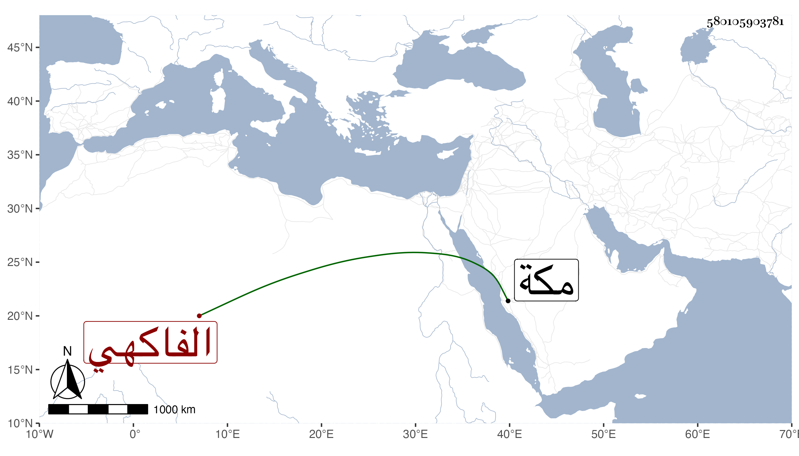

0902Sakhawi.DawLamic.ITO20230111-ara1.EIS1600.580105903781
Biography ID: 580105903781
343
ست الكل وتدعى سعيدة وتلقب سعادة ابنة على بن محمد بن عمر بن عبد الله بن أبي بكر الفاكهي . ولدت في رجب ظنا سنة ثمان عشرة وتزوجها أبو البركات بن أحمد بن الزين فولدت له عدة ، وكانت صالحة مباركة . ماتت في سلخ المحرم سنة اثنتين وأربعين بمكة .
